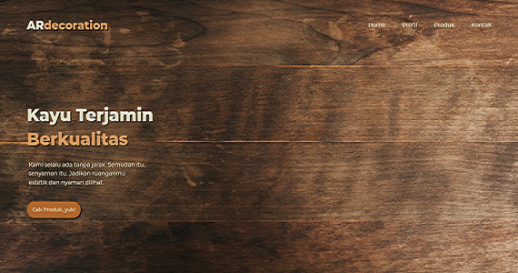
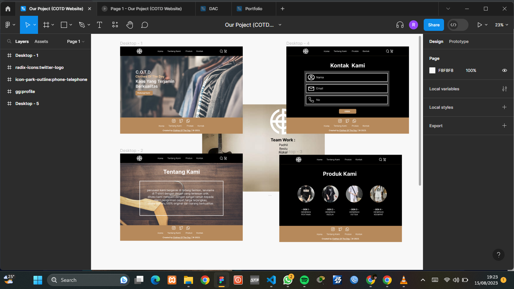

Website Company Profile Bisnis ARD

Saya membuat website company profile bisnis untuk mempromosikan bisnis di sekolah kami. Dan Juga baru saja mendapat apresiasi yang baik dari pada guru
Desain UI / UX Toko Baju

Saya membuat desain UI/UX ini pada saat ada tugas sekolah mengenai struktur desain sebuah toko baju yang bernama COTD.
Website Portofolio

Saya membuat portfolio ini agar dapat dijadikan sebuah value bagi diri saya, dan juga dapat dilihat oleh semua orang